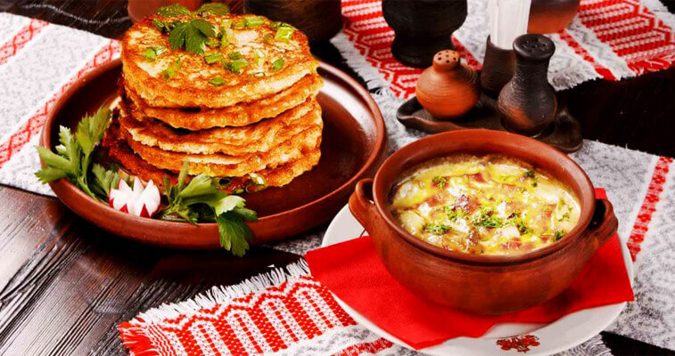

Cuisine of Belarus
Belarusian national cuisine has evolved over the centuries. Belarusian culinary traditions represent a mix of simple recipes used by commoners and a sophisticated cuisine of the nobility, an extensive use of local ingredients and unusual way of cooking. Old Belarusian recipes have survived to the present day, and the county’s visitors show an increased interest in them. Restaurants serving Belarusian traditional food offer not only peasant cuisine of the Belarusian countryside but also elaborate dishes served to Belarusian magnates. Traditional dishes are served at farmsteads that use only fresh farm produce to make the dishes which are often common only for a particular area. Here they bake bread to old recipes and technologies, cook homemade meat delicacies, cheese from cow or goat's milk, and sweets made of honey, apples and cranberries. Today’s diet of Belarusians includes many traditional dishes. The most popular are pork stew (machanka) and vereshchaka, homemade sausages, draniki (thick potato pancakes), kolduny, kletski (dumplings), babka (baked grated potato pie), cold sorrel soup, mushroom soup...
Old Belarusian Cuisine
Belarusian cuisine was influenced by two main factors:
- active farming and extensive use of local produce;
- influences from neighboring countries and migrant settlers
Since the times of the Grand Duchy of Lithuania the national culinary traditions have been a mix of Baltic, Slavic, Jewish and partly German cuisines.
Therefore, the Belarusian cuisine is one of the most diverse in the continent. It is similar to the Russian, Lithuanian, Ukrainian, Polish, Jewish, but is unique in its own way, is hearty and delicious.
In the old days, each social class had its own gastronomic traditions. Therefore the Belarusian cuisine was divided into peasants and bourgeois, shlyakhta and high nobility cuisines.
The Belarusian cuisine widely uses local produce:
- vegetables and greens (cabbages, turnips, beets, carrots, parsnips, pumpkins, potatoes, cucumbers, onions and garlic, sorrel, nettle, quinoa, orpine roots)
- pulses (beans, peas, lentils, kidney beans)
- grains (rye, barley, oats, buckwheat)
- mushrooms (pickled, dried, powdered)
- fruit and berries (apples, pears, plums, cherries, currants, blackberries, blueberries, red bilberries, raspberries, ashberries, high cranberries, canker berries)
- spices and dressings (caraway, coriander, linseed, horseradish, calamus, mustard, juniper, cherry and oak leaves)
Potatoes deserve a special mention: being introduced to the diet of the Belarusians in the 18th century they have formed the basis of many Belarusian dishes for hundreds of years. Among them are famous draniki, kolduny, pyzy, potato sausage, kletski, babka…
For centuries Belarusians consumed limited amounts of meat. Meat was usually served on festive occasions in the form of salted and sun-dried products. With time, the meat diet expanded. The most frequently used meat included:
- pork
- mutton
- beef
- poultry (chicken, duck, goose, turkey)
The Belarusian cuisine is a variety of meat and poultry dishes (pyachysta, kumpyachok, machanka, vereshchaka, tushanka, smazhanka), all sorts of home-made sausages, salty salo, byproduct dishes (vantrabyanka, rubtsy – pork belly stuffed with meat and buckwheat porridge), smoked meat…
The Belarusian cuisine is also rich in fish dishes. As a rule, it is river fish (tench, sturgeon, pike, eelpout, bream, eel, trout, perch, carp). Belarusians used to make yushka, dumplings, salt and smoked fish. Today restaurants serve famous "Pike Perch a la Radziwill."
Common dairy products included curd cheese (made of cow and goat milk), sour cream, and butter. Milk is a regular ingredient in many Belarusian recipes, including all kinds of soups, porridges, mokanka.
The diet of Belarusian villagers was always hearty, relatively simple in cooking (many dishes were prepared in the oven over low heat for a long time), but always fresh: chilled or warmed food was not served!
Nobility cuisine was more exquisite, with a bigger variety of products and spices, including exotic ones, and, of course, and with the use of more sophisticated cooking technologies. The nobles had an opportunity to indulge themselves in such dishes as elk lips in sugared vinegar, stuffed eel, rooster broth...
Belarusian cuisine today
The contemporary Belarusian cuisine is eclectic. It has preserved old traditional recipes which are gradually being revived. Meanwhile dishes from other countries are becoming increasingly popular, too.
Today’s restaurants offer modern intake on traditional Belarusian dishes which reflect original ideas of chefs and principles of Grande cuisine, which takes into account the diversity of products and seasonal changes.
You will definitely appreciate such delicious dishes as:
- Marinated white mushrooms with vegetable oil, hot potatoes, pieces of toasted wheat bread and leek
- Zhur with eggs, smoked meat and sour cream
- Cutlets from buckwheat and chopped meat (grechaniki) with sour cream and leek sauce
- Draniki with apple and sour-cream sauce
- Meat sauce (vereshchaka) with buckwheat pancakes
- Bigos (a dish from sour cabbage) with smoked meat, mushrooms and prunes
- Pyachisto (large pieces of gammon)
- A pear roasted in honey with spices (the recipe of the Radziwill family)

In the 20th century, in the times of the Soviet Union, the Belarusians were widely exposed to the culinary traditions of other countries, like Russia, Ukraine, the Caucasus and Central Asia. In those times many West European meat dishes appeared on the menu of Belarusian restaurants and canteens.
The main changes that the Belarusian cuisine underwent in the 20th century were:
- wheat flour and dishes from it became very popular (for centuries the Belarusians used mainly rye flour)
- salads became quite common
Today the menu of Belarusian restaurants features dishes of the Belarusian, European, and Asian cuisines, and modern culinary trends (wellness, fusion). But if you are in Belarus, you must taste the national cuisine, the dishes that can be “Belarusian” only in Belarus. You will see how delicious, interesting, sometimes even exclusive and unpredictable the Belarusian cuisine is!
Source: belarus.byGo back up